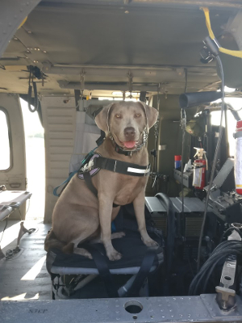
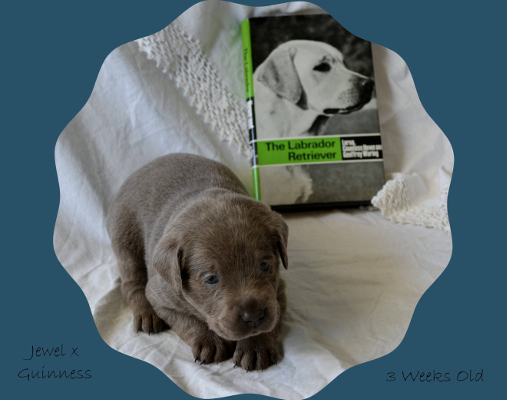
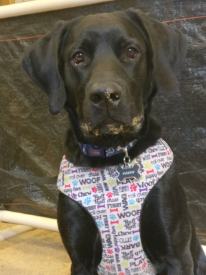
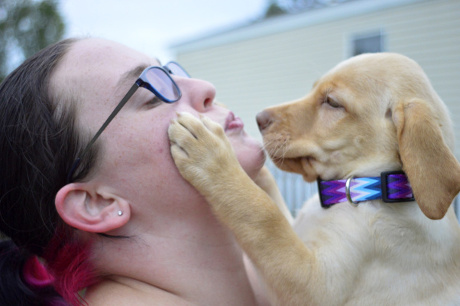
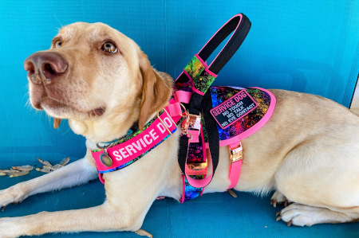

SuperDogs Service & Scent Work Training
Some superheroes have four paws
Meet the SuperDogs
Kari's dogs
Pepper Potts RATO NW1
 Pepper Potts is the first dog that I trained as a service dog. She was specifically chosen for the personality traits needed for a service dog. Pepper is a silver Labrador Retriever, a Guinness (sadly deceased) and Jewel (now retired) pup from VonBussler Labradors. I worked closely with Kristi, the breeder at VonBussler Labradors, to pick a dog with the right personality for service work. (See "traits of a service dog" for more information.) She is very mellow and relaxed most of the time, but can go into "play!" mode when she wants to. I got Pepper when she was 9 weeks old, and started training her as my service dog from day one. She is trained to help me with my PTSD and anxiety, but has also picked up on my asthma all on her own. She even started alerting me to my husband and my old dog Midas's seizures before they'd happen without any training for it! I worked with one local trainer for her obedience and basic service tasks, and work with a number of other local trainers for her scent work. She currently works with me daily as my service dog.
Many of my pets have had mythology related names, and when getting this dog, I wanted a superhero related name. Marvel, of course. Most of the female superheroes aren't that great, but Iron Man is my favorite, so between that and the fact that she's grey, Pepper (Potts) seemed to be a very fitting name for her. She's my sidekick and I can't imagine being without her.
Pepper is one of the most affectionate dogs you will ever meet. One of her favorite things is giving kisses. She gives what I call "attack kisses", where she'll hold you down and lick your entire face until she feels that she's done. She is very attached to her mama, and protects me from anything she doesn't feel comfortable with. But she does an appropriate type of protecting for a service dog - she won't go after someone or growl or seem like she's going to bite. Her type of protection is generally in the form of putting herself in between me and someone or something she doesn't like. One of my favorite things she "protects" me against is the nail clippers. She hates having her nails trimmed, so she doesn't think mama should have her nails trimmed either. She's gotten better about it, but she used to slap the nail clippers out of my hand any time I tried to trim my nails!
Pepper loves her toys, with stuffed animals being her favorite. She loves to tear the stuffing out and spread it all over the place. Her #1 favorite toy though is a stuffed bear she has that has a rope skeleton. This has allowed it to hold up to many, many games of tug between her and Ganon. If she's not playing tug with it, she's probably cuddling it. Brother likes to steal the toy at home, so she has a second one at my office that she gets all to herself. It's so precious to see her use it as a pillow when she sleeps!
Unlike many Labradors, Pepper is not a huge fan of being in the water or playing fetch. Unless she's doing both at the same time. She'll walk in the water a bit if she's with brother, but she doesn't really get interested in swimming unless you throw something for her to fetch. Then she'll fetch until she wears you out...and then some. She's also a bit of a diva about getting muddy. But these both go out the window for her favorite thing of all: scent work!
Ganon RATO ORT

Ganon (VBL's Prince of Enchanted Thieves) is a black Labrador retriever, a Guinness and Syke pup. He has a distinctly different personality from Pepper. I like to joke that Labradors have two modes: asleep and ZOOM!, and Ganon definitely fits this description perfectly. He has so much energy, and I have to channel it carefully or he gets himself into trouble. He loves to play fetch, and he'll fetch anything. A ball, stick, something you're trying to throw in the trash, or his absolute favorite, a rope. He also does scent work with his sister.
Like Pepper, Ganon has a fun story behind his name. After we lost our first dog Midas, we wanted another Labrador, and my ex-husband wanted a black male. So we waited for Kristi's next litter to be born, and had fun picking names in the meantime. We eventually had it narrowed down to Sirius (my pick - from Harry Potter) and Ganon (my ex-husband's pick and my second choice - from the Zelda games). We were watching Awesome Games Done Quick, a charity video games speed running marathon while the puppies were being born. Puppy after puppy in the litter was a female, until finally the eighth puppy (out of nine) in the litter was a male, and was even the color we wanted! He was born during a speed run of Wind Waker, so that decided it - his name is Ganon.
Ganon loves his scent work! He's titled in barn hunt, passed the ORT for nosework and is just waiting until we get a slot in a trial, he and I are training as a team for search and rescue (both human remains detection and live find), and we've done an ecological research contract (wildlife surveys). He will search for anything I give him and loves every second of it!
Ganon is available for breeding! Brief information below, full information available here. If you are interested in a breeding pair with Ganon, please e-mail me at kari@trainingsuperdogs.com or call/text me at 217-737-3974.
Breeding Information: (full information here)
- Ganon's 5-generation pedigree
- Ganon's Embark DNA test results
- Ganon's OFA test results
- Hips: Good
- Elbows: Normal
- Patellas: Normal
- Color: Ganon carries EeBbDD, so he can produce black, chocolate, and yellow pups.
- Titles: RATO, Nosework ORT passed all 3 scents (RATS, NW1, and SAR training are all in progress)
Trainee dogs
Zelda - available for placement
 Zelda came to SuperDogs to start her training in September of 2017 at 8 weeks old. She trained to do psychiatric and a bit of mobility work. She was placed with a handler in March of 2021, but while she and the handler were a wonderful match, one of the unfortunate truths of training service dogs is that sometimes a placement doesn't work out, and in this case the handler's health did not make it practical to continue having a service dog. So Zelda is back with me to clean up some of her training and find a new handler. If you are interested, e-mail me at kari@trainingsuperdogs.com or call/text me at 217-737-3974.